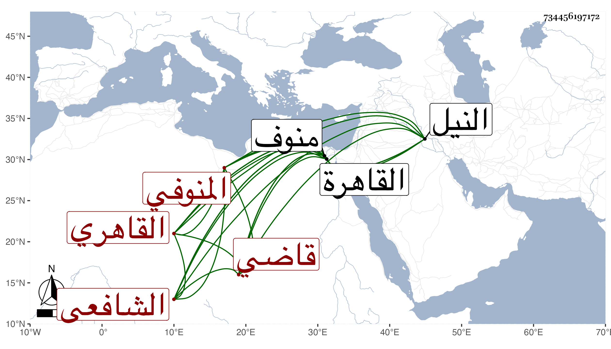

0902Sakhawi.DawLamic.ITO20230111-ara1.EIS1600.734456197172
Biography ID: 734456197172
506
أحمد بن محمد بن محمد بن عبد السلام بن موسى الشهاب أبو الخير بن العز المنوفي الأصل القاهري الشافعي قاضي منوف ويعرف بابن عبد السلام . ولد بعد صلاة الجمعة رابع عشر ربيع الأول سنة سبع وأربعين وثمانمائة ونشا في كنف أبيه فحفظ القرآن والعمدة والمنهاج وألفية ابن مالك وعرض على البوتيجي والمحلي والمناوي والأقصرائي وإمام الكاملية وسمع على أبيه جزء البطاقة في آخرين وتفقه بالعلم البلقيني وابن عمه البدر أبي السعادات والسراج العبادي والجلال البكري وآخرين كالبدر حسن الأعرج وعنه أخذ أيضا الفرائض والحساب وأخذ عن ابن قاسم والزين الأبناسي في النحو وعن ثانيهما في الأصول وأخذ عني في الحديث أشياء وكتب عني جملة ، وبرع في الفقه وشارك في غيره وناب عن الزين زكريا في بلده منوف ثم عنه بالقاهرة مضافا إلى منوف ، وكتب شرحا على مختصر أبي شجاع وعلى الستين مسئلة للزاهد وعلى الجرومية وعمل فتاوى شيخه البكري وعمل كتابا في النيل وغير ذلك وحج وجاور وحضر دروس البرهان بن ظهيرة وجمع نبذة من فتاويه أيضا بإشاراته وقرأ على العامة بزاوية شرف الدين وولع بالنظم فأتى منه بقصائد وغيرها مع نثر جيد وخط حسن واستحضار لكثير من فروع الفقه ومن شرح مسلم وغيرهما ومشاركة في كثير من الفضائل وسلامة فطرة ومحاسن .
